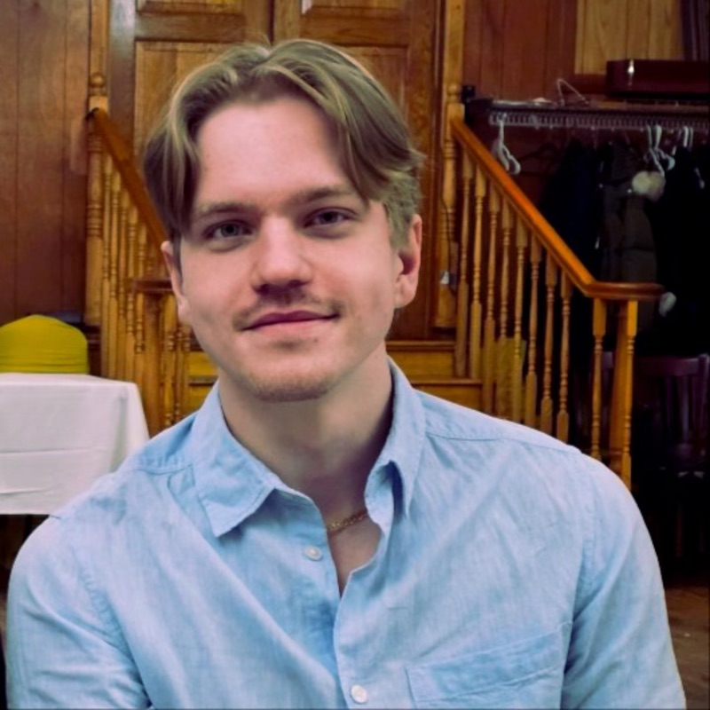
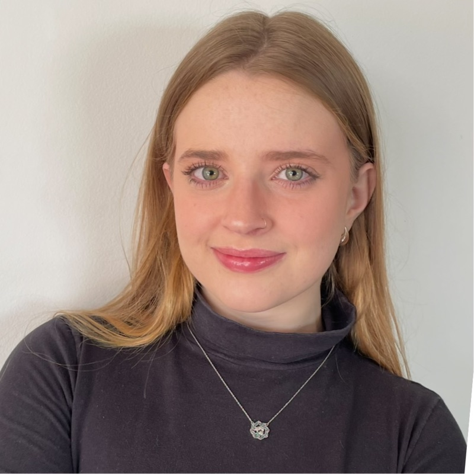

Helping you migrate to post-quantum
Post-quantum readiness, made knowable.
Q+U helps organizations find where quantum-vulnerable cryptography lives, understand what it means, and prepare for the migration ahead.
The universe is the unknown. Cyber risk is the known unknown. We make it knowable.
The problemWhere organizations stand
Most organizations have not started the post-quantum migration, and people remain the most common way in for attackers.
| Quantum plan | 5% have a defined strategy; 55% have taken no steps. ISACA 2025. |
|---|---|
| Understanding | 30% of cyber and IT professionals say they do not understand quantum's capabilities. ISACA 2025. |
| Human element | 62% of breaches in 2026, about 60% in 2025. Verizon DBIR. |
| Third parties | 48% of breaches in 2026, up 60% year over year. Verizon DBIR 2026. |
| Attackers and AI | The median attacker used AI across 15 documented techniques. Verizon DBIR 2026. |
Our insightWhat matters most?
The quantum migration fails before it starts, at the question every organization struggles with: what matters most?
Transitions are peak exposure
Old and new systems run side by side, defaults reset, and ownership blurs. Attackers look for the moment a system is between states.
Your calendar is a security input
A migration step that is safe in a quiet month is risky in earnings week, quarter-close or open enrollment. Attackers aim for when people are rushed.
Change creates the pretext
"Your certificate expires today, renew now" is far more believable mid-migration. The people going through the change need preparation tied to it.
ScannerOpen-source prototype
Four stages. One pass.
- Discovery
- Scanning
- Analysis
- Reporting
The prototype is a fork of AC Scanner by Qubitac, released under AGPL-3.0. Credit for the scanner engine goes to Qubitac.
Why nowDates attached
The migration now has dates attached, and almost no one is ready.
NIST IR 8547 proposes deprecating RSA and ECC after 2030 and disallowing them after 2035. Federal migration plans are being aligned to those dates, and federal rules flow into contractors, banks and healthcare.
The threat is already active: adversaries can harvest encrypted data today and decrypt it once quantum computers arrive, so long-lived data is exposed now.
FoundersWho we are
Brianna Gabaldon
inProduct manager on an operating system shipping to 1.4+ billion devices. B.S. Computer Science; M.S. Global Security, Conflict and Cybercrime (NYU), thesis on human factors in cyber risk. Ethical Tech CoLab advisor.

Daniel Vitenko
inB.S. Computational Mathematics; M.S. Quantum Science. Graduate research in large-scale RQC behavior and Fermi gas simulations.

Carolina Pernambuco Moron
inB.S. International Business; M.S. Global Economy with a specialization in Data Analytics; M.S. Global Security, Conflict and Cybercrime (NYU).
This work builds on The Human Architecture of Cyber Risk: How Micro-Businesses Operate Beyond Conventional Frameworks, M.S. thesis, NYU Center for Global Affairs, April 2026.
Contact
Let's talk.
We are talking to CISOs, integration leads and MSPs. If the post-quantum migration is on your desk, we would like to hear from you.